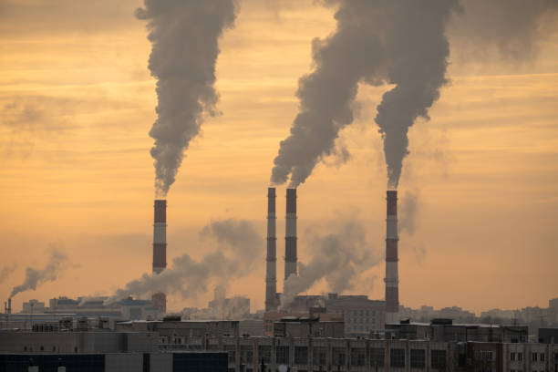
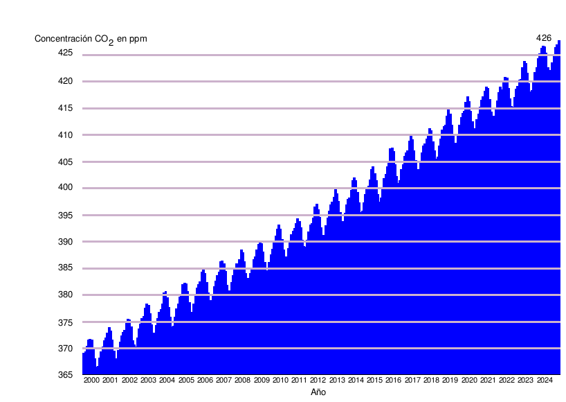
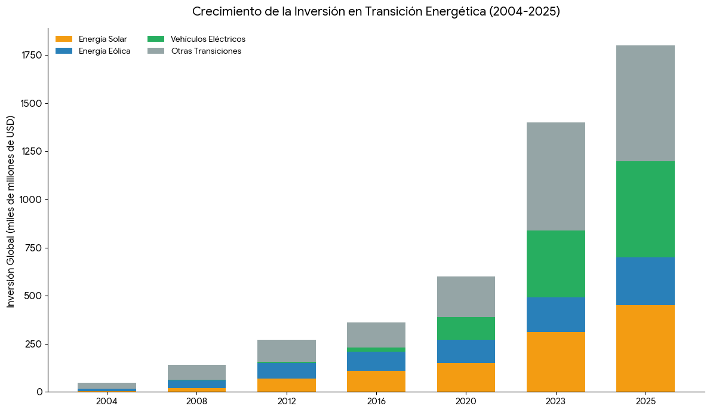
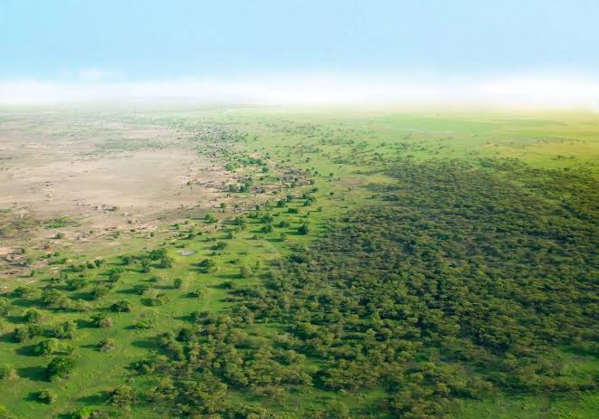

La velocidad del cambio
cronologia del calentamiento global

Hace cargando datos... las fábricas comenzaron a
inyectar grandes cantidades de dióxido de carbono a la atmósfera.
Desde entonces la temperatura a aumentado 1,35°C
Han pasado cargando datos... desde que El
científico sueco Svante Arrhenius fue el primero en calcular que
si se duplicaba el CO₂ de la atmósfera debido a
la actividad humana, la temperatura global aumentaría notablemente.

cargando datos... han pasado desde que el
científico Charles David Keeling, empezó a medir el CO₂ en Hawái,
creando la famosa "Curva de Keeling".
Hace cargando datos... Se celebró la Primera
Conferencia Mundial sobre el Clima, donde la comunidad científica
advirtió formalmente a los gobiernos que el calentamiento global
requería atención urgente.
Han transcurrido cargando datos... desde que Se fundó el
Panel Intergubernamental del Cambio Climático (IPCC), el cuerpo de la
ONU encargado de unificar la ciencia climática.
Desde que nacio la Convencion Marco de las Naciones Unidas
sobre el Cambio Climatico en la Cumbre de la Tierra
en Rio de Janeiro, han pasado ya
cargando datos... marcando el momento
en que se admitió oficialmente como un problema que requeria
tratados internacionales.
Con la firma del Protocolo de Kioto, hace cargando datos... el cambio
climático dejó de ser solo un debate ambiental de nicho.
Hemos descuidado la tierra por mucho tiempo y si no nos detenemos en
El cambio climatico aumentarà 1,5°C
Pero no te asustes, no todo està perdido, hay buenas noticias:
Debido a que el 12 de diciembre de 2015, hace cargando datos...
se firmó el Acuerdo de París, logrando que por primera
vez 195 países (tanto desarrollados como en desarrollo) se
pusieran de acuerdo de forma unánime para limitar el calentamiento
global por debajo de los 2 °C.

Desde hace cargando datos... el costo de
generar energía solar cayó un 85%, y el de la
energía eólica terrestre disminuyó más de un 55%.
El precio de las baterías de iones de litio, consideradas
el corazón de la electromovilidad, se ha reducido casi un
90% durante los ultimos cargando datos...

Con casi 11 años de trayectoria, cargando datos...
para ser mas especificos, una iniciativa masiva para plantar
una franja de árboles de 8.000 km a lo ancho de África
está restaurando millones de hectáreas de tierra degradada,
atrapando carbono y frenando el desierto del Sahara.
Cuidar el planeta es responsabilidad de todos asi que no lo olvides:
Mejor tierra, mejor futuro
Creditos y fuentes
- Hone, D. (2020b, octubre 22). From the Industrial Revolution to Climate Change: What Happened and Why? - 2041 Foundation.
- The climate change problem | Alberto Montanari. (s. f.).
- Calentamiento global: causas, impactos | StudySmarter. (s. f.). StudySmarter ES.
- Crisis climática. (s. f.). Climate & Development Knowledge Network.
- De Haro, A., & De Haro, A. (2023, 19 diciembre). Breve historia del cambio climático. FVS.
- United Nations. (n.d.). Causas y efectos del cambio climático | Naciones Unidas.
Gracias por leer esto hasta el final :D